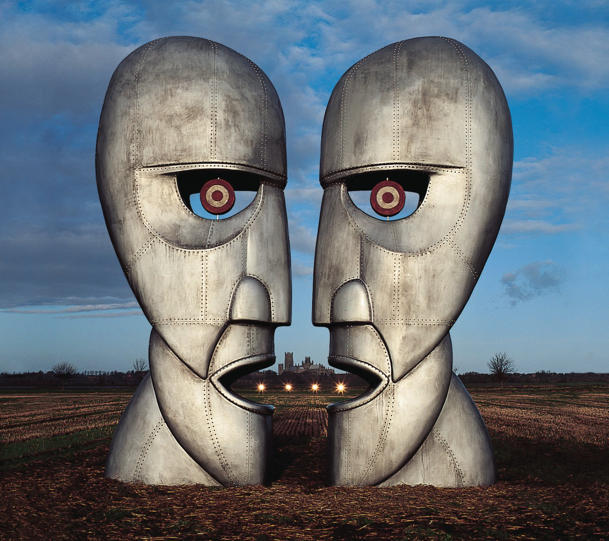

Narrative analysis
Narrative analysis is a new way of trading. It combines both technical & fundamental analysis into a unified view of the market. Narrative analysis is more general than any market theory that we know of. This makes it applicable to new markets which don't have a chart history for technical analysis & aren't amenable to the fundamental analysis (e.g. NFTs, public blockchains).
The most important axiom of the narrative analysis: The price will move if the traders believe that the price will move. Think about it: what makes a trader trade? Indeed, it is his belief that the price will move in the future. The belief can be irrational but strong, because the strength of belief is based not only on personal observations, but also on the opinion of other people. This explains why we see high volume on assets that don't have a "fundamental value" (like NFTs).
In other words, it's possible to "meme the trend into existence". However, the meme needs to be viral enough to spread in a wide population. And this is what the narrative analysis helps with - determining whether a new meme (narrative) is viral enough to start the trend.
Narrative
The basic building block is the "narrative" - a set of statements about future performance of a particular asset. For example:
- "Bitcoin will replace fiat."
- "Ethereum will become more valuable after the Proof-of-Stake transition."
- "Dogecoin to the moon!"
These statements can be true or false, we don't know. But they will become true if they are viral enough. If enough people believe & spread the narrative, they will trigger a self-reinforcing cycle of continuous price movement, also known as "the trend". The trend will confirm the narrative, attracting more people.
This "snowball effect" is present in nature, too. A chain reaction in the nuclear reactor, a wildfire in the forest, an avalanche in the mountains - all these are examples of self-reinforcement. It happens because the first iteration of the loop influences the adjacent parts of the system, enabling a second iteration. Likewise, people tell their friends ("adjacent people") to buy / sell a specific asset.
The narrative spreads in the population like a wildfire. However, some narratives are stronger than others. Which ones?
Black swans
We think that the strongest narratives are based on "black swans" - deep structural changes in our world. For example:
- Bitcoin is invented
- COVID-19 is detected
- Ukraine is invaded
Such events change the underlying structure of "supply flow" (amount of assets being produced / consumed). They happen rarely, and they interrupt the regular news, taking over the attention of people.
In order to profit from a "black swan" event, it's necessary to understand its influence on supply / demand.
Supply
Supply directly affects price:
- Higher supply -> Lower price.
- Lower supply -> Higher price.
However, extra supply may not hit the market directly. Sometimes it is stored in warehouses. Sometimes it is discovered but not mined (e.g. new ore deposits). The traders still react to the extra supply, but they do it differently depending on when / how it comes to the market. Thus, we need to introduce more fine-grained definitions of supply to estimate their impact on the price:
- Max supply = the amount of asset that can ever exist
- Total supply = the amount of asset in existence at a specific moment in time
- Locked supply = the amount of asset that can't be transferred within a specific time period
- Circulating supply = total supply - locked supply
- Free supply = same as circulating supply
- Pooled supply = the amount of asset in all pools
- Pooled supply in pool = the amount of asset in a specific pool
- Ordered supply = the amount of asset in the orders (bids / asks)
- Ordered supply in orderbook = the amount of asset in the orders (bids / asks) in a specific orderbook
- Market supply = sum of ordered and pooled supply
- Staked supply with free distribution = locked supply that is earning interest as free supply
- Staked supply with locked distribution = locked supply that is earning interest as locked supply
- Stashed supply = the amount of asset that is planned to be consumed in the next production cycle
- Destroyed supply = the amount of asset being removed from the world
- Consumed supply = same as destroyed supply
- Burned supply = same as destroyed supply
Note that "max supply" can be changed. For example, we assume that max supply of BTC is 21'000'000, but this is just a constant in the code. It can be changed by developers. We assume it is unlikely, and most people have the same opinion. But if it happens, it will lower the long-term max price of 1 BTC.
Price is a ratio of two supplies (e.g. BTCUSD price = "how much BTC was just exchanged for how much USD"). Therefore, if one supply changes while the other supply stays constant, the price will change.